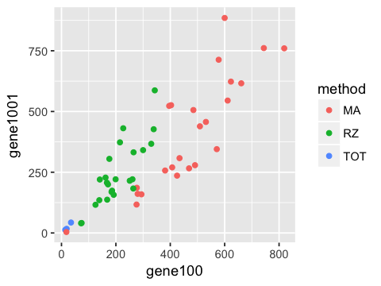
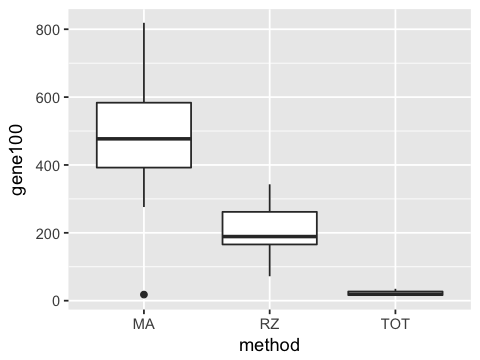
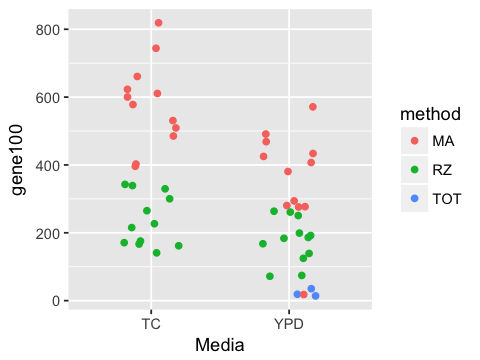
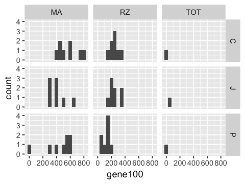
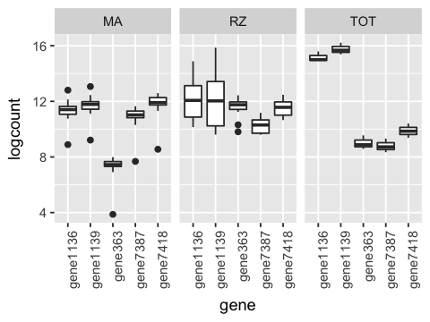

R Graphics Exercise (Solutions)¶
In [1]:
library(tidyverse)
Warning message:
“package ‘tidyverse’ was built under R version 3.4.2”── Attaching packages ─────────────────────────────────────── tidyverse 1.2.1 ──
✔ ggplot2 2.2.1 ✔ purrr 0.2.4
✔ tibble 1.4.2 ✔ dplyr 0.7.4
✔ tidyr 0.8.0 ✔ stringr 1.3.1
✔ readr 1.1.1 ✔ forcats 0.3.0
Warning message:
“package ‘tibble’ was built under R version 3.4.3”Warning message:
“package ‘tidyr’ was built under R version 3.4.3”Warning message:
“package ‘purrr’ was built under R version 3.4.2”Warning message:
“package ‘dplyr’ was built under R version 3.4.2”Warning message:
“package ‘forcats’ was built under R version 3.4.3”── Conflicts ────────────────────────────────────────── tidyverse_conflicts() ──
✖ dplyr::filter() masks stats::filter()
✖ dplyr::lag() masks stats::lag()
In [2]:
df <- read_tsv('data/gene_counts.txt')
Parsed with column specification:
cols(
.default = col_integer(),
person = col_character(),
method = col_character(),
Label = col_character(),
Media = col_character(),
Strain = col_character()
)
See spec(...) for full column specifications.
In [3]:
df[1:10, 1:10]
| sid | person | method | Label | Media | Strain | gene0 | gene1 | gene10 | gene100 |
|---|---|---|---|---|---|---|---|---|---|
| 1 | J | MA | 1_MA_J | YPD | H99 | 1 | 0 | 13 | 425 |
| 1 | J | RZ | 1_RZ_J | YPD | H99 | 0 | 0 | 14 | 261 |
| 2 | C | MA | 2_MA_C | YPD | H99 | 0 | 0 | 10 | 491 |
| 2 | C | RZ | 2_RZ_C | YPD | H99 | 10 | 0 | 18 | 251 |
| 2 | C | TOT | 2_TOT_C | YPD | H99 | 1 | 0 | 0 | 14 |
| 3 | J | MA | 3_MA_J | YPD | H99 | 0 | 0 | 8 | 280 |
| 3 | J | RZ | 3_RZ_J | YPD | H99 | 0 | 0 | 7 | 168 |
| 3 | J | TOT | 3_TOT_J | YPD | H99 | 0 | 0 | 2 | 35 |
| 4 | P | MA | 4_MA_P | YPD | H99 | 1 | 0 | 16 | 571 |
| 4 | P | RZ | 4_RZ_P | YPD | H99 | 0 | 0 | 1 | 74 |
In [4]:
options(repr.plot.width=4, repr.plot.height=3)
1. Plot a scatter plot of gene100 against gene 1001. Color points by the method used. Save the image as a PNG file ‘fig1.png’ in the ‘figs’ folder.
In [5]:
ggplot(df, aes(x=gene100, y=gene1001, color=method)) +
geom_point()
ggsave('figs/fig1.png')
Data type cannot be displayed:
Saving 7 x 7 in image

2. Make a boxplot plot of gene100 counts by method.
In [6]:
ggplot(df, aes(x=method, y=gene100)) +
geom_boxplot()
ggsave('figs/fig2.png')
Data type cannot be displayed:
Saving 7 x 7 in image

3. Make a jitter plot of gene100 counts by Media and color the points by method. Set the jitter width to be 0.2.
In [7]:
ggplot(df, aes(x=Media, y=gene100, color=method)) +
geom_jitter(width=0.2)
ggsave('figs/fig3.png')
Data type cannot be displayed:
Saving 7 x 7 in image

4. Make a grid of histograms of counts for gene100, with rows showing the person and columns showing the method used.
In [8]:
ggplot(df, aes(x=gene100)) +
facet_grid(person ~ method) +
geom_histogram(binwidth=50)
ggsave('figs/fig4.png')
Data type cannot be displayed:
Saving 7 x 7 in image

5. Make a row of boxplots of log counts of the top 5 genes where each colum shows a differnt method.
Warning: This is difficult and involves quite a bit of data processing.
In [9]:
genes.top5 <- df %>%
select(starts_with('gene')) %>%
summarize_all(mean) %>%
gather() %>%
arrange(desc(value)) %>%
head(5)
Warning message:
“package ‘bindrcpp’ was built under R version 3.4.4”
In [10]:
genes.top5
| key | value |
|---|---|
| gene1139 | 884531.49 |
| gene1136 | 484816.47 |
| gene7418 | 132744.71 |
| gene363 | 62325.08 |
| gene7387 | 45986.86 |
In [11]:
genes.top5$key
- 'gene1139'
- 'gene1136'
- 'gene7418'
- 'gene363'
- 'gene7387'
In [12]:
df %>%
select(c('method', genes.top5$key)) %>%
gather(gene, count, -method) %>%
mutate(logcount = log(count)) %>%
ggplot(aes(x=gene, y=logcount)) +
geom_boxplot() +
facet_wrap(~ method) +
theme(axis.text.x = element_text(angle = 90, hjust = 1))
ggsave('figs/fig5.png')
Data type cannot be displayed:
Saving 7 x 7 in image
